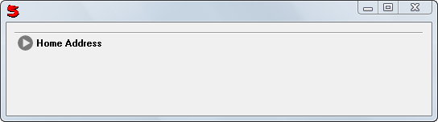
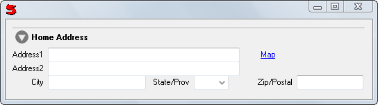

(label, control, open = false, leftAlign = false)
Provides a pane that expands and contracts showing or hiding its child control.
The label is used as the tab caption. When the button is clicked the ExpandControl will switch between Expanded and contracted.
When the ExpandControl is closed it Send's NeedSummary which can be used at the controller to provide a "Summary" of the data just hidden. If the controller does not respond to NeedSummary the control can have a MakeSummary method.
When you have multiple ExpandControl's NeedSummary can use a source parameter and check source.Label
Window(#(Border (Expand 'Home Address' Address) ystretch: 1)) 
Note: Address has a MakeSummary method.
See also: AccordionControl